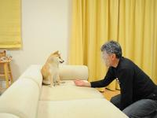

Doge
Apa itu "Doge"?
Doge adalah istilah slang untuk "anjing" yang seringkali dikaitkan dengan gambar Shiba Inu ( dijuluki "Shibe") yang dilengkapi dengan teks monolog pada fotonya dan sering muncul diTumblr. Foto-foto ini sering diedit sedemikan rupa untuk mengubah wajah anjing tersebut atau menambah teks monolog dengan font Comic Sans.
Asal-usul kata
Penggunaan kata "doge" sebagai katau gaul untuk anjing muncul pertama kali pada tanggal 24 Juni 2005, dimana kata itu disebutkan dalam sebuah episode Pertunjukan boneka Homestar Runner. Dalam episode berjudul "Biz Cas Fri 1", Homestar menyebut Strong Bad sebagai "d-o-g-e" ketika mencoba mengalihkan perhatiannya dari pekerjaannya.
Identitas
Pada 23 Februari 2010, guru taman kanak-kanak Jepang, Atsuko Sato memposting beberapa foto anjing Shiba Inu yang dia selamatkan dan kemudian dipelihara, Kabosu, ke blog pribadinya. Di antara foto-foto itu, ada foto Kabosu yang sedang duduk di sofa sambil melotot ke samping di kamera dengan alis terangkat.


Pada Desember 2013, tak lama setelah meme "Doge" viral, situs berita teknologi The Verge menerbitkan sebuah artikel yang mengidentifikasi Kabosu sebagai Shiba Inu asli yang digambarkan dalam meme tersebut.
Penyebaran
Pada tanggal 28 Oktober 2010, foto Kabosu dikirim ke /r/ads dengan judul "LMBO LOOK @ THIS FUKKIN DOGE," dan mendapatkan 266 upvote, 218 poin dan 48 komentar sebelum kemudian diarsipkan. Blog topik tunggal Your Daily Doge telah dibuat untuk menanggapi trend Doge yang makin viral kala itu, tetapi dengan cepat ditelantarkan pembuatnya setelah me-reblog tulisan leonsumbitches beberapa kali.
Pada bulan Juni, thread mengenai doge, di mana banyak orang berbagi foto anjing dengan pakaian yang berbeda, mulai banyak muncul di board 4chan, termasuk /v/ (Video Games). Pada bulan yang sama, photoset anjing dengan cangkir dan piring yang diseimbangkan di kepalanya menjadi viral pada Tumblr setelah airpi menyebutnya sebagai "Polite Doge."
Pada bulan Agustus, blog topik doge pertama, Fuck Yeah Doge, diluncurkan di Tumblr. Kepopuleran meme ini di musim panas 2012 bertepatan dengan popularitas topik tunggal Tumblr Shiba Confessions, ketika orang mulai menyebut anjing-anjing ini sebagai "shibes." Pada Desember 2012, istilah "doge" muncul di Reddit dalam posting yang dikirimkan ke /r/DogsIWannaHug. Pada bulan yang sama, sebuah foto monolog berjudul Schnauzer dikirim ke Cheezburger dengan judul "Schnauze."
Pada tanggal 8 Januari 2013, subreddit /r/Doge dibuat, membagikan foto dan video dari berbagai anjing Shiba Inu. Pada bulan Mei, /r/dailydoge dibuat untuk berbagi satu foto "Doge" dalam sehari, kadang diberi caption kadang tidak. Blog topik tunggal lainnya, shibe-doge, diluncurkan pada Juli 2013 yang didedikasikan untuk berbagi foto Shiba Inu. Pada 29 Juli 2013, thread doge adalah thread yang mendapatkan sticky di board 4chan /s4s/ (Shit 4chan Says), dan mendapatkan lebih dari 600 balasan.